공유압기능사 (2016-07-10 기출문제)
1과목: 임의구분
1. 유압유로서 갖추어야 할 성질로 옳지 않은 것은?
- 내연성이 클 것
- 점도 지수가 클 것
- 윤활성이 우수할 것
- 체적탄성계수가 작을 것
(정답률: 72%)

2. 그림과 같은 회로에서 속도 제어 밸브의 접속 방식은?
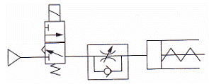
- 미터인 방식
- 블리드오프 방식
- 미터아웃 방식
- 파일럿오프 방식
(정답률: 74%)
3. 조작력이 작용하고 있을 때의 밸브 몸체의 최종 위치를 나타내는 용어는?
- 노멀 위치
- 중간 위치
- 작동 위치
- 과도 위치
(정답률: 76%)
4. 시스템을 안전하고 확실하게 운전하기 위한 목적으로 사용하는 회로로 2개의 회로 사이에 출력이 동시에 나오지 않게 하는 데 사용되는 회로는?
- 인터록 회로
- 자기유지 회로
- 정지우선 회로
- 한시동작 회로
(정답률: 81%)
5. 피스톤이 없이 로드 자체가 피스톤 역할을 하는 것으로 출력축인 로드의 강도를 필요로 하는 경우에 자주 이용 되는 것은?
- 단동 실린더
- 램형 실린더
- 다이어프램 실린더
- 양로드 복동 실린더
(정답률: 67%)
6. 유압 기본회로 중 2개 이상의 실린더가 정해진 순서대로 움직일 수 있는 회로에 속하는 것은?
- 로킹 회로
- 언로딩 회로
- 차동 회로
- 시퀀스 회로
(정답률: 84%)
7. 유압 장치의 장점이 아닌 것은?
- 작동이 원활하며 진동도 적다.
- 인화 및 폭발의 위험성이 없다.
- 유량 조절로 무단 변속이 가능하다.
- 작은 크기로도 큰 힘을 얻을 수 있다.
(정답률: 82%)
8. 3개의 공압 실린더를 A+, B+, C+, A-, B-, C-의 순서로 제어하는 회로를 설계하고자 할 때, 신호의 중복(트러블)을 피하려면 최소 몇 개의 그룹으로 나누어야 하는가? (단, A, B, C는 공압실린더, “+”는 전진동작, “-”는 후진 동작이다.)
- 2
- 3
- 4
- 5
(정답률: 65%)
9. 신호의 계수에 사용할 수 없는 것은?
- 전자 카운터
- 유압 카운터
- 공압 카운터
- 메커니컬 카운터
(정답률: 49%)
10. 공기 건조 방식 중 -70[℃] 정도까지의 저 노점을 얻을 수 있는 것은?
- 흡수식
- 냉각식
- 흡착식
- 저온 건조 방식
(정답률: 68%)
11. 유압 펌프의 동력(Lp)을 구하는 식으로 옳은 것은? (단, P는 펌프 토출압 [kgf/cm2], Q는 이론 토출량 [L/min]이다.)
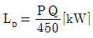
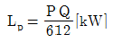
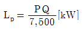
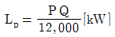
(정답률: 66%)
12. 실린더 피스톤의 운동 속도를 증가시킬 목적으로 사용하는 밸브는?
- 이압 밸브
- 셔틀 밸브
- 체크 밸브
- 급속 배기 밸브
(정답률: 80%)
13. 압력 제어 밸브의 종류에 속하지 않는 것은?
- 감압 밸브
- 릴리프 밸브
- 셔틀 밸브
- 시퀀스 밸브
(정답률: 54%)
14. 압축공기의 응축된 물과 고형 이물질을 제거하기 위하여 사용하는 필터의 기호는?
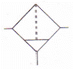
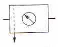
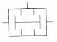
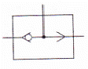
(정답률: 83%)
15. 밸브의 조작방식 중 복동 가변식 전자 액추에이터의 기호는?
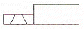
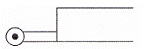
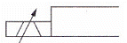
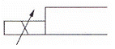
(정답률: 70%)
16. 충격 완화에 사용되는 완충기에 관한 설명으로 옳지 않은 것은?
- 충격 에너지는 속도가 빠르거나 정지되는 시간이 짧을수록 커진다.
- 스프링식 완충기는 구조가 간단하고 모든 충격력을 완벽하게 흡수할 수 있다.
- 가변 오리피스형 유압식 완충기는 동작의 시작과 종료까지 항상 일정한 저항력이 발생한다.
- 충격력의 완화가 더욱 필요한 때는 쿠션 행정의 길이를 길게 하거나 감속회로를 설치한다.
(정답률: 71%)
17. 그림의 유압기호에 관한 설명으로 옳지 않은 것은?
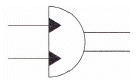
- 요동형 유압펌프이다.
- 요동형 유압 액추에이터이다.
- 요동운동의 범위를 조절할 수 있다.
- 2개의 오일 출입구에서 교대로 오일을 출입시킨다.
(정답률: 55%)
18. 액추에이터의 속도를 조절하는 밸브는?
- 감압 밸브
- 유량 제어 밸브
- 방향 제어 밸브
- 압력 제어 밸브
(정답률: 72%)
19. 회로의 압력이 설정압을 초과하면 격막이 파열되어 회로의 최고 압력을 제한하는 것은?
- 유체 퓨즈
- 유체 스위치
- 압력 스위치
- 감압 스위치
(정답률: 74%)
20. 기계적 에너지로 압축 공기를 만드는 장치는?
- 공기 탱크
- 공기 압축기
- 공기 냉각기
- 공기 건조기
(정답률: 83%)
2과목: 임의구분
21. 공유압 변환기의 종류가 아닌 것은?
- 비가동형
- 블래더형
- 플로트형
- 피스톤형
(정답률: 52%)
22. 축압기의 사용 용도에 해당하지 않는 것은?
- 압력 보상
- 충격 완충작용
- 유압 에너지의 축척
- 유압 펌프의 맥동 발생 촉진
(정답률: 63%)
23. 펌프가 포함된 유압 유닛에서 펌프 출구의 압력이 상승하지 않는다면 그 원인으로 적당하지 않은 것은?
- 외부 누설 증가
- 릴리프 밸브의 고장
- 밸브 실(Seal)의 파손
- 속도제어 밸브의 조정 불량
(정답률: 58%)
24. 공압시스템 설계시 사이징 설계를 위한 조건으로 틀린 것은?
- 부하의 종류
- 실린더의 행정 거리
- 실린더의 동작 방향
- 압축기의 용량
(정답률: 42%)
25. 공압 실린더, 제어 밸브 등의 작동을 원활하게 하기 위하여 윤활유를 분무 급유하는 기기의 명칭은?
- 드레인
- 에어 필터
- 레귤레이터
- 루브리케이터
(정답률: 64%)
26. 밸브의 변환 및 외부 충격에 의해 과도적으로 상승한 압력의 최댓값을 무엇이라고 하는가?
- 배압
- 서지 압력
- 크래킹 압력
- 리시트 압력
(정답률: 70%)
27. 관로의 면적을 줄인 길이가 단면치수에 비하여 비교적 긴 경우의 교축을 무엇이라 하는가?
- 서지
- 초크
- 공동
- 오리피스
(정답률: 57%)
28. 분사노즐과 수신노즐이 같이 있으며 배압의 원리에 의하여 작동되는 공압기기는?
- 압력 증폭기
- 공압제어 블록
- 방향 감지기
- 가변 진동 발생기
(정답률: 37%)
29. 두개의 복동 실린더가 1개의 실린더 형태로 조립되어 출력이 거의 2배의 힘을 낼 수 있는 실린더는?
- 탠덤 실린더
- 케이블 실린더
- 로드리스 실린더
- 다위치제어 실린더
(정답률: 70%)
30. 공기조정 유닛의 압력조절 밸브에 관한 설명으로 옳은 것은?
- 감압을 목적으로 사용한다.
- 압력유량 제어 밸브라고도 한다.
- 생산된 압력을 중압하여 공급한다.
- 밸브시트에 릴리프 구멍이 있는 것이 논 브리드식이다.
(정답률: 49%)
31. 최대 눈금 10[mA]의 전류계로 1[A]의 전류를 측정하려면 필요한 분류기 저항은 몇[Ω]인가? (단, 전류계 내부저항은 0.5[Ω] 이다.)
- 0.0⑤
- 0.⑤
- 0.5
- 5
(정답률: 49%)
32. 직류 200[V], 1,000[W]의 전열기에 흐르는 전류는 몇[A]인가?
- 0.5
- 5
- 10
- 50
(정답률: 72%)
33. SCR에 대한 설명으로 틀린 것은?
- 교류가 출력된다.
- 정류 작용이 있다.
- 교류전원의 위상 제어에 많이 사용된다.
- 한 번 통전하면 게이트에 의해서 전류를 차단할 수 없다.
(정답률: 52%)
34. 회로 시험기를 이용하여 저항값을 측정하고자 할 때 전환 스위치의 위치는?
- DC V
- Ω
- AC V
- DC mA
(정답률: 70%)
35. Y결선으로 접속된 3상 회로에서 선간 전압은 상전압의 몇 배인가?
- 2
- √2
- 3
- √3
(정답률: 72%)
36. 두 종류의 금속을 서로 접합하고 접합점을 서로 다른 온도의 차이를 주게 되면 기전력이 발생하여 일정한 방향으로 전류가 흐르는 현상은?
- 가우스 효과
- 제벡 효과
- 톰슨 효과
- 펠티에 효과
(정답률: 60%)
37. 그림과 같은 R-L-C 직렬회로에서 공진주파수가 발생할 수 있는 조건은?
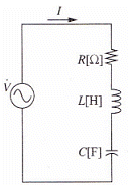
- R=0
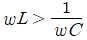
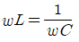
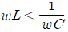
(정답률: 65%)
38. 직류 전동기를 급정지 또는 역전시키는 전기 제동 방법은?
- 플러깅
- 계자제어
- 워드 레너드 방식
- 일그너 방식
(정답률: 58%)
39. 직류 전동기에서 자기회로를 만드는 철심과 회전력을 발생시키는 전기자 권선으로 구성된 것은?
- 계자
- 전기자
- 정류자
- 브러시
(정답률: 54%)
40. 무접점 방식 시퀀스에 사용되는 것은?
- 전자 릴레이
- 푸시버튼 스위치
- 사이리스터
- 열동형 릴레이
(정답률: 43%)
3과목: 임의구분
41. 전기량(Q)과 전류(I), 시간(t)의 상호 관계식이 옳은 것은?
- Q=It
- Q=I/t
- Q=t/I
- I=Q
(정답률: 71%)
42. 도체에 전류가 흐를 때 자기력선의 방향은 어떤 법칙에 의하는가?
- 렌츠의 법칙
- 플레밍의 왼손 법칙
- 플레밍의 오른손 법칙
- 앙페르의 오른나사 법칙
(정답률: 62%)
43. 자기 인덕턴스 L[H], 코일에 흐르는 전류 세기 I[A]일 때 코일에 저장되는 에너지[J]는?
- LI
- 1/2LI
- 1/2LI2
- 1/2L2
(정답률: 59%)
44. 시퀀스 제어(Sequence Control)의 접점표시 중 한시동작 한시복귀 접점을 표시한 것은?
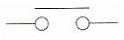
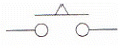
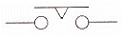
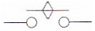
(정답률: 62%)
45. 시퀀스 제어에서 검출부에 해당되지 않는 것은?
- 리밋 스위치
- 마이크로 스위치
- 압력 스위치
- 푸시버튼 스위치
(정답률: 60%)
46. 가공방법의 보조기호 중에서 리밍(Reaming) 가공에 해당하는 것은?
- FS
- FL
- FF
- FR
(정답률: 70%)
47. 굵은 실선 또는 가는 실선을 사용하는 선에 해당하지 않는 것은?
- 외형선
- 파단선
- 절단선
- 치수선
(정답률: 49%)
48. 보기 도면과 같이 지시된 치수보조기호의 해독으로 옳은 것은?
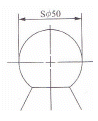
- 호의 지름이 50mm
- 구의 지름이 50mm
- 호의 반지름이 50mm
- 구의 반지름이 50mm
(정답률: 72%)
49. 그림과 같이 대상물의 구멍, 홈 등과 같이 한 부분의 모양을 도시하는 것으로 충분한 경우에는 그 필요한 부분만을 나타내는 투상도의 종류는?
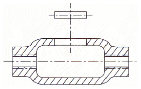
- 국부 투상도
- 부분 투상도
- 보조 투상도
- 회전 투상도
(정답률: 66%)
50. 도면에서 척도란에 NS로 표시된 것은 무엇을 뜻하는가?
- 축척임을 표시
- 제1각법임을 표시
- 비례척이 아님을 표시
- 배척임을 표시
(정답률: 71%)
51. 정사각뿔의 중심에 직립하는 원통의 구조물에 대해 그림과 같이 정면도와 평면도를 나타내었다. 여기서 일부 선이 누락된 정면도를 가장 정확하게 완성한 것은?
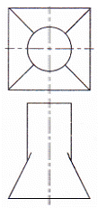
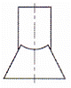
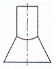
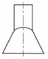
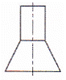
(정답률: 63%)
52. 기계 재료 표시 기호 중 탄소 공구강 강재의 KS 재료기호는?
- SCM 415
- STC 140
- SM 20C
- GC 200
(정답률: 58%)
53. 페더키(Feather Key)라고도 하며, 축 방향으로 보스를 슬라이딩 운동을 시킬 필요가 있을 때 사용하는 키는?
- 성크 키
- 접선 키
- 미끄럼 키
- 원뿔 키
(정답률: 73%)
54. 다음 중 V-벨트의 단면적이 가장 작은 형식은?
- A
- B
- E
- M
(정답률: 68%)
55. 축 방향 및 축과 직각인 방향으로 하중을 동시에 받는 베어링은?
- 레이디얼 베어링
- 테이퍼 베어링
- 스러스트 베어링
- 슬라이딩 베어링
(정답률: 45%)
56. 지름 15[mm], 표점거리 100[mm]인 인장 시험편을 인장 시켰더니 110[mm]가 되었다면 길이 방향의 변형률은?
- 9.1[%]
- 10[%]
- 11[%]
- 15[%]
(정답률: 59%)
57. 나사의 풀림을 방지하는 용도로 사용되지 않는 것은?
- 스프링 와셔
- 캡 너트
- 분할 핀
- 로크 너트
(정답률: 49%)
58. 그림과 같은 스프링에서 스프링 상수가 k1=10[N/mm], k2=15[N/mm] 면 합성 스프링 상수값은 약 몇[N/mm]인가?
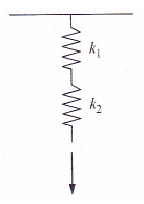
- 3
- 6
- 9
- 25
(정답률: 49%)
59. 동력전달을 직접 전동법과 간접 전동법으로 구분할 때, 직접 전동법으로 분류되는 것은?
- 체인 전동
- 벨트 전동
- 마찰차 전동
- 로프 전동
(정답률: 57%)
60. 양 끝이 수나사를 깎은 머리 없는 볼트로 한쪽은 본체에 조립한 상태에서, 다른 한쪽에는 결합할 부품을 대고 너트를 조립하는 볼트는?
- 탭 볼트
- 관통 볼트
- 기초 볼트
- 스터드 볼트
(정답률: 51%)